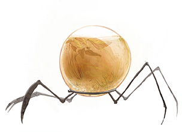

Imagine the Earth millions of years from now.
Scientist have been creating time glass globes and filling them with oxygen and carbon dioxide, hoping to create tiny atmospheres in vain hope that they can re-create the planets' atmosphere.
Imagine seeing the tiny storms form, and seeing it pour rain in a tiny glass egg. The bot's life has begun. so you
One by one, the tiny bots spring to life.
You begin to see tiny spots of life, green and brown, slowly beginning to emerge from the drops of water, and then in span of a few seconds, a miniature ecosystem is born.
But there is no sunlight in a steel bunker under the earth.
You decicde to let the bots explore the bunker.
The tiny bots scurry off, the glass case shinning faintly in the dim lights.
Down and around the halls the went, looking into cracks and crevices.
The rest of the bots scuttle over to it, and they all begin to march in a line.
You follow slowly, curious to see what they have found. Closer and closer to one of the large doors sealing the bunker from the outside world.
There is a small change in the light. You are forced to squint. You realize that the first bot has stop, and its glass case has a long thin beam of light reflecting off it.
In an impenetrable bunker, there is a note of sunlight.
This should be impossible, but this has been a day of firsts.
you walk over to the door and but your eye to the tiny puncture in the door.
Outside, the scrub world that you left all those years ago has come back to life, all at once.
The Earth has come back to life.
Image Source: Terrarium bots by Brendle Giron